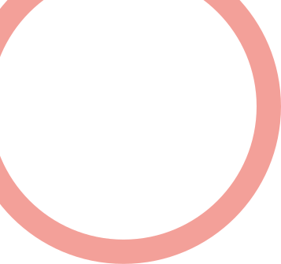
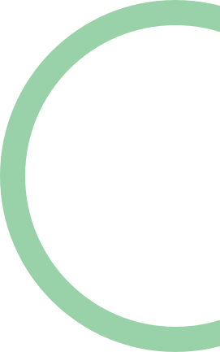
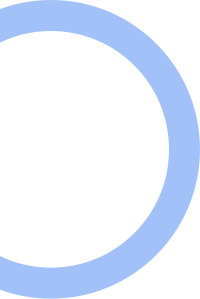
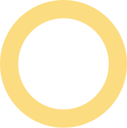
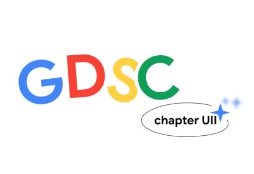
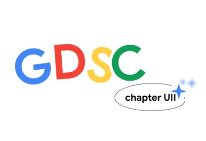

Welcome to GDSC UII Portal!

We’re finally here! Checkout what’s currently happening on GDSC UII.
    

What is GDSC UII?
Google Developer Student Clubs (GDSC) adalah sebuah komunitas developer mahasiswa yang tertarik untuk mempelajari teknologi serta mengimplementasikannya pada proyek nyata, dengan disupervisi secara langsung oleh Google melalui Community Manager–nya.
Kini GDSC telah hadir di UII. Lebih lanjut